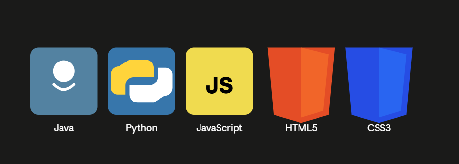

About
I first became interested in programming because I wanted to understand how the technology behind the websites and applications I use every day actually works. What started as curiosity gradually turned into a serious interest in software development, and I began teaching myself programming through courses, projects, and plenty of trial and error. I am currently focused on building a strong foundation in computer science and software engineering. I have worked with languages such as C and Python, Java studied algorithms and data structures, and explored web development with HTML and CSS. My goal is not simply to learn how to write code, but to understand how to build useful, reliable products and eventually turn some of my ideas into real projects. Outside of coding, I enjoy going to the gym, learning new things, reading, and watching movies and TV series. I am also interested in technology startups and hope to build something of my own in the future. There is still a lot I don't know, but that is probably what makes programming exciting for me — there is always something new to learn.
Experience
2024 - present
Learning programming languages and full-stack development
I started learning programming in 2024 and have been consistently building my skills through courses and personal projects. I’ve explored Java, Python, HTML, CSS, and JavaScript, with a growing focus on full-stack development and writing practical, maintainable code.
Java
Python
HTML
CSS
JavaScript
Projects

Google Search Homepage Recreation
A recreation of the Google Search homepage built to practice frontend development and responsive web design. I focused on reproducing the layout, styling, navigation, search bar, and overall visual structure using HTML and CSS.
Java
Python
HTML
CSS
JavaScript
View Full Project Archive →